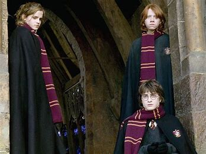
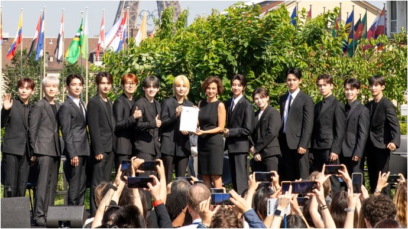
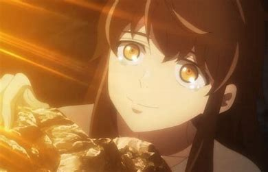

HBO is now casting for its upcoming 'Harry Potter' TV series, based on the books by J.K. Rowling. The search is underway for young actors to play Harry, Ron, and Hermione in this new adaptation.The casting call, announced by Variety, is looking for children aged 9-11 by April 2025, who live in the UK and Ireland. It emphasizes the commitment to inclusive casting, stating, "We are committed to inclusive, diverse casting. For every role, please submit qualified performers, without regard to ethnicity, sex, disability, race, sexual orientation, gender identity, or any other basis protected by law unless otherwise specifically indicated."To apply, aspiring actors must submit two self-tapes. The first video should feature a short poem or story (excluding *Harry Potter* material) no longer than 30 seconds, using their natural accent. The second video, limited to one minute, asks applicants to introduce themselves, providing details such as their date of birth, height, and location, and describing a family member, friend, or pet they are close to.The deadline for submissions is October 31, and filming is scheduled to take place in the UK between 2025 and 2026.Harry Potter Series: Potterheads, be ready for a new wave of magic. The much-awaited series is in the works and the studio is in search of actors who can essay Harry, Ron and Hermione.This fresh take on the magical world of 'Harry Potter' aims to bring the beloved story to a new generation, while honouring the themes of friendship,bravery, and adventure that have made the franchise a global phenomenon.
and creativity.
Today, Audrey Azoulay, Director-General of UNESCO, appointed the 13 members of SEVENTEEN as UNESCO’s
first-ever Goodwill Ambassador for Youth. They announced the launch of “Going Together – For Youth Creativity
and Well-Being”, an ambitious joint grant programme for youth projects around the world. SEVENTEEN will
contribute $1 million to finance this initiative."CARATS ARE REALLY PROUD OF THEM"
Audrey Azoulay
UNESCO Director-General:
"This group has become a symbol for millions of young people around the world, to whom we transmit positive
energy and the spirit of leadership. UNESCO, as the United Nations organization for Culture and Education, is
delighted to join forces with SEVENTEEN to give young people the means to express themselves and
to take action to rise to this century’s major challenges."
Joshua
one of the members on behalf of SEVENTEEN:
"We are grateful to be recognized for our consistent effort and longstanding passion to contribute to youth worldwide.
We know that our dreams don’t stand alone and now, to give back what we’ve received from all of you, we are
determined to use our voice to create a global youth community made stronger through mutual love and support."
More information:
UNESCO and SEVENTEEN’s Global Youth Grant Scheme will support youth-led initiatives worldwide that address challenges affecting the well-being and development of young people and their communities, in particular through music, the arts and sport. To this end, it will provide project leaders aged from 18 to 30 years old, from different backgrounds and regions.As part of their ambassadorship, SEVENTEEN will also take part in UNESCO’s awareness campaigns and events, and will promote UNESCO’s values and actions during their performances.
Tower of God had no shortage of action; this week, the characters face the consequences. “Beyond the Sadness” is a bookend episode, resolving last week's occurrences and setting up some worldbuilding for the future without much high stakes activity in between. As we gear up for the season finale, all the characters are making their preparations: Khun is scheming, Serena is saying goodbye, and Bam is figuring out what he wants to do next. Some characters are clearly less in the dark about future events than others and their behind-the-scenes intrigue doesn't make a lot of sense right now.
Orange's Leviathan Alternate-History Anime Series
The story begins in 1914 on the eve of war, when a prince on the run encounters a girl dressed in boy's clothes on a bioengineered airship known as Leviathan.Keith Thompson drew the original illustrations in the 2009-2011 novel series. Nobuko Toda (Ghost in the Shell: SAC_2045,RWBY: Ice Queendom, Ultraman anime) and Kazuma Jinnouchi (Suzume, Ghost in the Shell: SAC_2045, RWBY: Ice Queendom, Ultraman anime, Halo 4, Halo 5, Metal Gear Solid 3 and 4) are composing the music. Qubic Pictures is producing the project, and Orange is producing the animation.
.jpg)